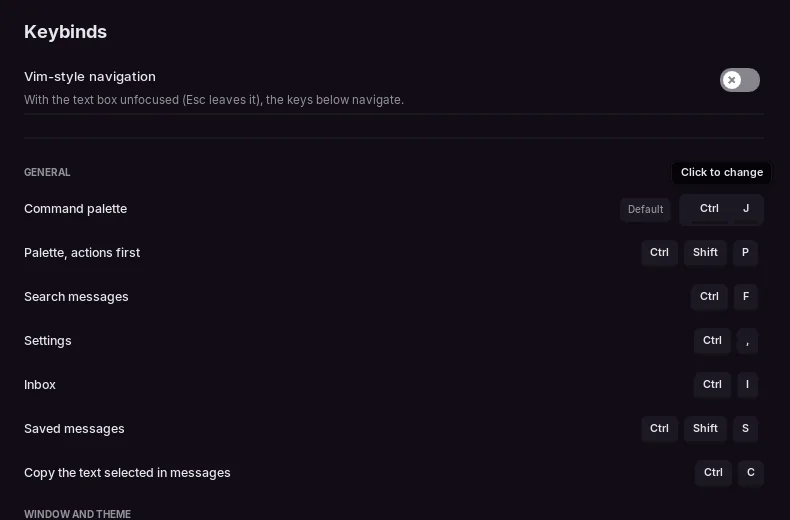

Shortcuts and CLI
The same keys on Linux and Windows. There is no macOS build, so it's always Ctrl, never Cmd. These tables come from src/ui/atalhos.zig, the list the app itself shows in Settings → Keybinds, so this page and the app can't drift apart. These are the default keys. The ones marked ✎ (palette, search, settings, inbox, saved, themes, fullscreen, tabs, mute and deafen) can be changed there: see Changing a shortcut.
Keyboard
General
| Action | Keys |
|---|---|
| Command palette ✎ | Ctrl+K |
| Palette, actions first ✎ | Ctrl+Shift+P |
| Search messages ✎ | Ctrl+F |
| Settings ✎ | Ctrl+, |
| Inbox ✎ | Ctrl+I |
| Saved messages ✎ | Ctrl+Shift+S |
| Copy the text selected in messages | Ctrl+C |
Window and theme
| Action | Keys |
|---|---|
| Next theme ✎ | F2 / Ctrl+T |
| Previous theme ✎ | Shift+F2 / Ctrl+Shift+T |
| Make the interface bigger or smaller | Ctrl++ / Ctrl+- |
| Interface at normal size | Ctrl+0 |
| Fullscreen ✎ | F11 / Alt+Enter |
Tabs
| Action | Keys |
|---|---|
| Next tab ✎ | Ctrl+Tab |
| Previous tab ✎ | Ctrl+Shift+Tab |
| Go to tab N | Alt+1…9 |
| Close tab ✎ | Ctrl+W |
| Open channel in a new tab | Ctrl+Click |
| Close tab with the mouse | Middle click |
| Next tab set ✎ | Ctrl+Shift+PageDown |
Voice
| Action | Keys |
|---|---|
| Mute or unmute ✎ | Ctrl+Shift+M |
| Deafen or undeafen ✎ | Ctrl+Shift+D |
Message box
| Action | Keys |
|---|---|
| New line | Shift+Enter / Ctrl+Enter |
| Edit your last message (empty box) | ↑ |
| Cancel a reply or edit | Esc |
| Pick from the @, #, :ab or / list | Tab / Enter |
| Paste a copied image | Ctrl+V |
Changing a shortcut
In Settings → Keybinds, click the keys of a shortcut marked ✎ and press the new combination. Esc cancels. The app refuses a combination, and says why, when it:
- already belongs to another shortcut, which it names;
- is taken by something fixed: select all, copy, cut, paste, undo and redo, new line, the interface size,
Alt+1…9,Esc,Alt+F4, the vim keys, and moving or deleting by word in the text box; - has no
CtrlorAlt(anFkey alone is fine), since it would fire while you type; - is
Ctrl+Altwith a letter, number or symbol, which is AltGr on many keyboards.
Default puts a shortcut back. A changed shortcut has one combination, and it's saved in settings.kdl as a line like keybind "paleta" "Ctrl+J". Tips that mention a shortcut, like the ones on the mute and deafen buttons, show your current keys.

Mouse and other keys
- Push to talk: the key or mouse button you pick in Settings → Voice. On Linux it only works while the window is focused. On Windows it also works while another window is focused, like a game, for most keys: letters,
F13toF24and the side mouse buttons, for example. Settings → Voice says when the key you picked only works with the window focused. - Right-click works on messages, users, channels and servers.
- Esc closes whatever is on top: a menu, the image viewer, the palette, settings.
- Zoom:
Ctrlwith the=/+key or the keypad+,-and0. It goes from 75% to 200% and is saved. - Plugins can add their own shortcuts with
larper.keybind; each plugin's card in Settings → Plugins lists them. The app's own shortcuts don't use the Windows (Super) key, so it's free for them. - If a shortcut does nothing, your desktop or window manager may be catching it first.
Vim navigation
It's off by default. Turn it on in Settings → Keybinds. The keys work while the text box doesn't have focus, and Esc leaves the box keeping what you typed.
| Action | Keys |
|---|---|
| Scroll down / up | j / k |
| Top / bottom of the conversation | gg / G |
| Half page down / up | Ctrl+d / Ctrl+u |
| Next / previous channel | J / K |
| Back to the text box | i / Enter |
| Leave the text box | Esc |
| Search (palette) | / |
Command line
larpercord [options]| Option | What it does |
|---|---|
--theme NAME | starts with this theme |
--list-themes | lists the built-in themes and exits |
--mode MODE | claro (or light) or escuro, ignoring your settings |
--lang LANG | pt, en, ja or ru, ignoring your settings |
--demo | uses the demo data even with a token |
--login | shows the sign-in screen, ignoring the saved token |
--settings | opens straight into settings |
--no-live | turns off the demo mode's automatic messages |
--shot FILE.png | saves a screenshot once the screen settles, then exits |
--stats | prints the opening timeline and the cost of each frame |
--qa | runs the automatic UI test, with screenshots in qa-out/ (debug builds, or with -Dqa=true) |
--qa-list | lists the QA suites that QA_SUITE accepts (same builds) |
--voice-test GUILD CHANNEL | joins a voice channel for 25 s, always muted (needs LARPER_TOKEN) |
--tls-check URL | checks that the app's network works on this system: an HTTPS request to the address with the app's certificate settings, and whether libcurl has WebSocket. It prints the result and exits with an error if either fails |
--restarted | used by the app itself when it restarts after an update; you don't need it |
--help | shows the usage text |
--version | prints the version and exits |
On Windows the program is larpercord.exe, and it isn't on PATH. In PowerShell, call it by its full path (this is where install.ps1 puts it; if you unzipped it yourself, use that folder), or put the options at the end of a shortcut's Target:
& "$env:LOCALAPPDATA\Programs\larperCord\larpercord.exe" --theme vidroThe Windows build has no console, so the options that only print text (--help, --list-themes, --stats, --tls-check, --version) show nothing in the terminal. To read that text, send it to a file:
Start-Process "$env:LOCALAPPDATA\Programs\larperCord\larpercord.exe" -ArgumentList '--list-themes' -NoNewWindow -Wait -RedirectStandardError out.txt; Get-Content out.txt--version writes to standard output, so for it use -RedirectStandardOutput instead of -RedirectStandardError.
The built-in themes are also listed in Settings → Appearance.
On both systems, if larperCord is already open, even only in the tray, starting it again just brings that window back and ignores the other options. Quit it first (Quit in the tray icon's menu). --demo, --shot, --list-themes, --help, --version, --tls-check and --voice-test work either way.
Environment variables
Set them for one run, in the terminal you start the app from:
LARPER_RENDERER=software larpercord# Windows, PowerShell: lasts until you close this window
$env:LARPER_RENDERER = 'software'
& "$env:LOCALAPPDATA\Programs\larperCord\larpercord.exe"In cmd, it's set LARPER_RENDERER=software before running the .exe. Variables only count when the app starts: if it's already open, even only in the tray, quit it first, or the new start just brings the open window back.
| Variable | What it does |
|---|---|
LARPER_TOKEN | the account token (see Connect your account) |
LARPER_RENDERER | picks the SDL render backend: opengl, vulkan, gpu or software, and on Windows also direct3d11 or direct3d12. It wins over the choice in Settings → Performance → Renderer |
LARPER_HIDDEN | opens with a hidden window. The app draws nothing while hidden, so memory reads much lower than with a real window |
LARPER_BENCH | redraws nonstop, to measure the cost of a frame |
LARPER_VOICE_DEBUG | prints what happens in a call (opcodes, close codes, DAVE) to the terminal. It never prints tokens or keys. On Windows there's no terminal: turn on Settings → Advanced → Save debug log, which records the same |
LARPER_DEBUG_MEDIA | logs why an image failed to load. On Windows, use the debug log, as above |
LARPER_READ_DEBUG | logs why a channel became unread: a new message, or a read confirmation from Discord. The debug log records the same |
LARPER_NO_FFMPEG | pretends FFmpeg isn't installed |
LARPER_EGL_ALL | Linux only: turns off the trick that skips unneeded EGL drivers |
LARPER_SCENE | sets up a scene for documentation screenshots |
LARPER_RECORD, LARPER_RECORD_FRAMES | records the sign-in screen as frames in a folder |
LARPER_FLOOD | sends N presence changes per second in demo mode (load test) |
LARPER_DEMO_VIDEO | swaps the demo's video for a .mp4 file of yours (tests) |
LARPER_NO_PICS, LARPER_SQUARE | draw avatars without pictures, or square, to measure what pictures cost |
LARPER_INSTANCE | keeps the one-copy-at-a-time rule in demo mode and screenshots too (tests) |
LARPER_SHOT_REAL | with --shot, uses the saved account instead of the demo data |
XDG_CONFIG_HOME and XDG_CACHE_HOME are respected on both systems (on Windows they take the place of %APPDATA% and %LOCALAPPDATA%), and they're handy for running with a clean configuration.